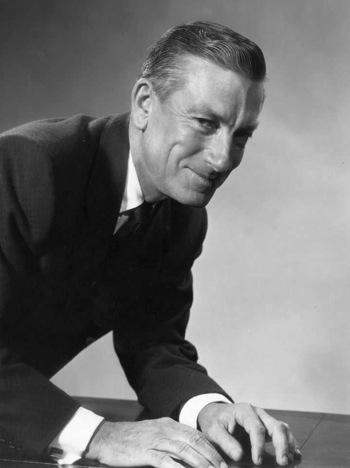
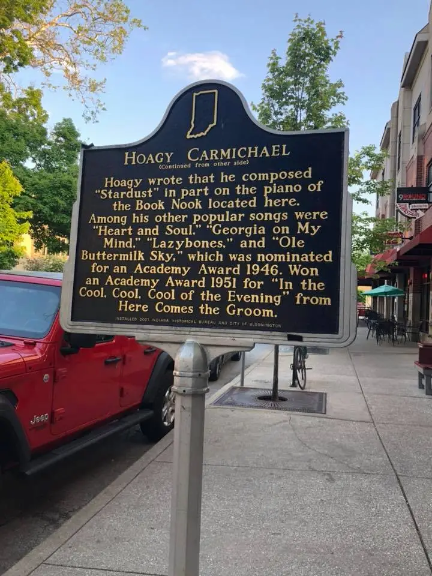

Here are some things that I have created!

I chose a theme and a color scheme, and then took photographs of various beauty products. Then I strategically put them together in Adobe In Design. My vision for the final composition was to display bright colors and crisp letters together in a way that made sense.

This was a poster I created last fall semester in my tpoygraphy class. It was to advertise a concert (that wasn't real!) at IU.

This is a charcoal drawing of a palm that I drew in a class called Simulation & Reality.


I am from Long Island, New York.
Here are some photos that I have taken near my home town this summer.

This is a photo I took after a day at the beach.

This was what the sunset looked like one night on my way home from dinner.

This is what I saw on my way to NYC.

This was a few weekends ago when I went to a New York Mets game! My family and I are big mets fans.

Here are a few of my friends and I on a night out this summer.

To end my presentation here are my cute dogs.
For this project I decided to augment the Hoagy Carmichael Statue that is right near the Fine Arts Building. I chose to focus on this statue because I have always wondered who Hoagy was and why that statue was built and placed there. After thorough research I have discovered many interesting things about him. I chose some image targets that relate to his life, with a plan to tape them to the statue itself. I wanted my project to be a "Augmented Reality Biography" of Hoagy. So, when my viewer looks at the image targets in Unity, I want them to also get to read a bit about his life. So, I added in captions underneath the photos as well.
Here are some of the images that I used in this project!
 
For this project I chose to focus on the Netflix series Stanger Things for my collage. I used p5.js to create it. My goal was to design an 80s themed background with colors and shapes. Then, I added the photos of the different characters in the show ontop. I then added in an interactive element and sound. When you click on Vecna, the eerie clock song that is used throughout the show, plays. I honestly don't love how this turned out. If I were to redo this project, I would add in more interactive elements. I originally wanted each character to have a sound once you clicked on their picture, but I sort of struggled in creating this and it was difficult for me to figure out. Below is a screen shot of what I created. Here is the link to my P5.js file which includes the interactive element of my collage.
https://editor.p5js.org/jburlock/full/kAjrGx9Qq
For this project I created a movement motivator. It was made with an Adafuruit Circuit Playground, in which I used the coding language, Python
to program each element. I knew I wante this device to be able to attach on to a shoe, and provide an indidivual with motivation to get up and
start moving. So, I decided to program in some flashing lights, utilizing the colors red and green. My intention was to have the Circuit Payground
flash green when it detects movement, and flash red when it is still. Then, I knew that I wanted to add in sound. So, when there is movement detected
the speaker says "You're doing great!" along with a green light, and when there is no movement detected it plays an alarm clock sound paired with a
red light.
For my final project I decided to use p5.js again, but this time I started from scratch and created something comepletely new. I knew I wanted to
include a song by one of my favorite artists, Jusitn Bieber, within it. With the help of a tutorial video, I made what I call a Song Visualizer. The
circle in the middle of screen pulses according to how the song sounds. The particles floating around the circle also react to the song, moving in
various ways depending on beats, bass, volume etc. The background of my project also shakes when there is a heavy bass, and continuously flickers for
an added visual effect. The final thing I did in the project was I chose a background that I felt was interesting, and went along with the whole idea
of the project. I wanted it to be mesmerizing. I took the photo of what seems to look like swirling paint, blurred it and placed it in the background.
https://editor.p5js.org/jburlock/full/gEyE0JFlr